ThreeDFlattener.animateSpiral() shows a nice infinite tunnel
animation. The colors are based on the fibonacciSpiral. This needs some
tweaking and could use a GUI to configure it. But I'm committing now
because this is the first really good looking animation.
ThreeDFlattener.animateDemo3(n?: number): AnimationLoop shows
a previous 3d animation.
Try new Circle(), new InertiaAndBounce(),
new Physics(), new ExponentialFollower(),
ThreeDFlattener.demo(),
ThreeDFlattener.demo3(7), or
Circle.removeAll() in the JavaScript console.
Or
ThreeDFlattener.tunnelDemo({count: 600, periodMS: 8, perRevolution:
phi, perspective: 2}). All options have reasonable defaults. Use
ThreeDFlattener.tunnelDemo({}) or
ThreeDFlattener.tunnelDemo() to get all defaults.
Or ThreeDFlattener.fibonacciSpiral({stripeCount: 13}). Or
ThreeDFlattener.fibonacciSpiral({initialColor: "black", circleCount:
100, colors: ["lime", "yellow", "blue", "magenta", "red"], perspective:
2/3, msBetweenStripes: 900}). All options have reasonable defaults. Use
ThreeDFlattener.fibonacciSpiral({}) or
ThreeDFlattener.fibonacciSpiral() to get all defaults.
Or followMouse(new Physics()) then
followMouse(new
Circle().configure({radius:0.025,color:"CornflowerBlue"}))
then click your mouse to move the target.
Or exponentialFollower = new ExponentialFollower(), then
inertiaAndBounce = new InertiaAndBounce(), then n ⨉
exponentialFollower.goal = inertiaAndBounce.circle.center
Or circle = new InertiaAndBounce().circle, then n ⨉
circle = new ExponentialFollower().followCircle(circle).circle.
Or Circle.overlapping([...Circle.allAttached()]).
Or
followMouse(new ExponentialFollower()); followMouse(new Circle()). These will follow the mouse but only when the left button is down.
Or
followMouse( new ExponentialFollower().configure({ halflife:
2000, circle: { color: "#0F0", radius: 0.14 }, }) );
followMouse( new ExponentialFollower().configure({ halflife:
500, circle: { color: "#0C0", radius: 0.11 }, }) );
followMouse( new ExponentialFollower().configure({ halflife:
125, circle: { color: "#080", radius: 0.08 }, }) );
followMouse(new Circle().configure({ color: "#040", radius:
0.05 }));
The source code is available at https://github.com/TradeIdeasPhilip/random-svg-tests?tab=readme-ov-file#quick-simple-fun-javascript-animations.
These are different ways to display an SVG. The <IFRAME> allows me to view the SVG exactly the same as if the SVG were not part of this page. However, I can manipulate the SVG almost as easily as if the SVG were directly embedded in this page. This can be helpful if I want to display the SVG (like at the top of this page) but also have the option to save the image as a standalone SVG file.
I had to create an svg file on the local web server as a template to modify. If I start from a blank document, the browser will create an HTML document and embed my svg file in it. A data URL will have the wrong permissions, so the main document will have limited access to the <IFRAME>.